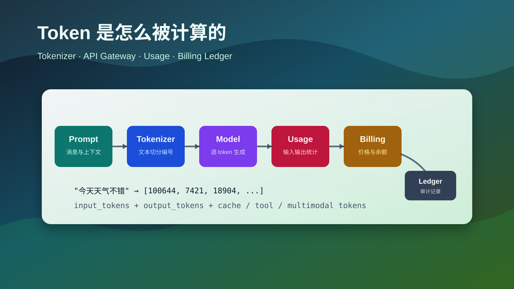

How Token Counting Works: How AI Providers and API Proxies Track Usage
When using LLM APIs, you often see fields such as
prompt_tokens,completion_tokens, andtotal_tokens. A token is not simply a word or character. It is the unit produced by the model’s tokenizer, and provider billing is built around counting input, output, cached, tool, and multimodal units.

Token usage tracking flowThe short version:
| Question | Answer |
|---|---|
| What is a token | A unit produced when the tokenizer splits text |
| Is it the same as word count | No. Chinese, English, punctuation, whitespace, and code tokenize differently |
| How providers count it | They count input before inference, output during generation, then return usage |
| How API proxies count it | They estimate before forwarding, prefer upstream usage after completion, then settle billing |
| Why local counts differ | Tokenizer mismatch, hidden prompts, tool schemas, RAG context, multimodal inputs, retries, and caching |
1. What a token is
LLMs do not process raw text directly. Before inference, text goes through a tokenizer, which splits it into tokens and maps each token to a numeric ID.
For example:
|
|
may be split into pieces such as:
|
|
This is only illustrative. Different models can tokenize the same text differently. Common words may be one token, rare characters may be split, and whitespace, punctuation, JSON, logs, and source code can all add tokens.
The practical definition is: a token is the smallest vocabulary unit the model actually reads or generates.
2. Why billing is token-based
LLM cost is strongly related to token count:
- longer inputs require more context processing;
- longer outputs require more generation steps;
- larger context windows increase memory and attention cost;
- tools, multimodal input, long context, caching, and reasoning models add more accounting dimensions.
A simplified formula:
|
|
Output tokens are often priced higher because they are generated step by step. Each new token depends on the current context and previous generated tokens.
3. What gets counted in a request
Real API requests usually contain more than the user’s latest message.
| Content | Usually counted | Note |
|---|---|---|
| User message | Yes | The user’s visible input |
| System prompt | Yes | Role and behavior instructions |
| Developer prompt | Yes | Platform or application rules |
| Conversation history | Yes | Previous turns re-enter the context |
| RAG snippets | Yes | Retrieved context is added to the prompt |
| Tool definitions | Yes | Function schemas can be large |
| Tool results | Yes | JSON, tables, and logs may enter later turns |
| Output text | Yes | The model’s generated answer |
| Images, audio, video | Depends on model | Often converted into special billing units |
| Cached content | Depends on provider | May be reported and priced separately |
A “simple” request may become:
|
|
This is why the same user message can cost very different amounts in a chat app, RAG app, coding assistant, agent, or search-enabled assistant.
4. How providers count tokens
Provider-side usage counting usually happens across the gateway, tokenizer, model server, and billing system.
Typical steps:
- authenticate API key, project, organization, quota, and rate limits;
- normalize messages, tools, response format, and multimodal inputs;
- count input tokens with the model’s tokenizer;
- check context length;
- generate output and count generated tokens;
- summarize usage when generation stops, is truncated, or errors;
- write model, user, request ID, tokens, cost, and status into billing;
- return a response with usage metadata.
A simple usage object may look like:
|
|
More detailed platforms may expose:
|
|
Field names differ across providers, but the core idea is the same: bill the units the model actually processed and generated.
5. Streaming usage
For non-streaming calls:
|
|
For streaming calls:
|
|
An API proxy usually relays chunks while also accumulating the response. If the upstream provider returns usage in the final chunk, the proxy uses it. If not, it may re-tokenize the final output and estimate usage locally.
Interrupted streams need careful handling:
| Scenario | Typical treatment |
|---|---|
| User stops generation | Already generated output tokens may still be billed |
| Client disconnects | Depends on whether the proxy cancels upstream quickly |
| Proxy forwarding fails | Depends on whether upstream already processed the request |
| Timeout | May include only input or partial output |
A serious proxy should not bill only by the characters received by the client. It should rely on upstream usage or server-side generation records when possible.
6. How API proxy platforms track usage
An API proxy sits between users and model providers. It forwards requests, but also manages authentication, quota, pricing, routing, retries, and audit records.
There are usually three accounting layers:
| Layer | Purpose | Accuracy |
|---|---|---|
| Pre-request estimate | Context check, balance check, rate limiting | Estimate |
| Post-request settlement | Use upstream usage or local tokenizer result | Closer to real usage |
| Offline reconciliation | Compare proxy records with provider invoices | Final audit |
Pre-request estimate
Before forwarding, the proxy needs to decide whether the request should be accepted.
|
|
The render_messages step matters. Counting only the latest user message underestimates the request.
Post-request settlement
After completion, the proxy should prefer provider usage:
|
|
Provider usage is more authoritative because the provider knows internal templates, cache hits, special modalities, and exact generated output.
Usage ledger
A mature proxy writes immutable usage records instead of only reducing a user balance.
|
|
The ledger makes billing explainable: request ID, user, provider, model, token counts, upstream cost, user-facing cost, and status can all be audited.
7. Why proxy counts can differ from official counts
| Cause | Why it differs |
|---|---|
| Tokenizer version mismatch | Model tokenizer rules may differ or evolve |
| Message template mismatch | Providers wrap roles, tools, and messages internally |
| Hidden system prompt | Apps or proxies may inject invisible instructions |
| Conversation history | Old messages re-enter the input |
| Large tool schemas | JSON schemas can exceed the user prompt |
| RAG context | Retrieved chunks increase input tokens |
| Structured output | JSON schema and examples add prompt cost |
| Multimodal conversion | Images and audio are not simple text tokens |
| Cache hits | Cached tokens may have separate pricing |
| Retries | Failed upstream attempts may still create cost |
Reasonable proxy behavior:
- estimate locally before request;
- settle with upstream usage after request;
- estimate locally only when upstream usage is unavailable;
- reconcile proxy logs with upstream bills regularly.
8. Context windows and maximum output
Token counting also determines whether a request can fit into the model context window:
|
|
Example with an 8192-token context window:
| Input tokens | Max output | Safe |
|---|---|---|
| 2000 | 1000 | Yes |
| 7000 | 1000 | Near the limit |
| 7900 | 1000 | Likely rejected |
| 8200 | 500 | Input already exceeds window |
Many context length errors are not caused by the latest user message. They come from history, system prompts, RAG snippets, tool schemas, and output constraints.
9. Cached tokens
Some providers cache repeated prompt prefixes. If the system prompt, tool schema, or a long document prefix is identical across requests, the provider may reuse processed context.
|
|
Usage may include:
| Field | Meaning |
|---|---|
input_tokens |
Total input tokens |
cached_input_tokens |
Input tokens served from cache |
billable_input_tokens |
Tokens charged at normal input price, depending on provider rules |
For proxies, this means pricing cannot always be total_tokens * one_price. Detailed fields matter.
10. Where token cost grows
| Scenario | Token pattern |
|---|---|
| Simple Q&A | Short input, output dominates |
| Long summarization | Long input, medium output |
| Code generation | Code symbols, indentation, and file context add tokens |
| RAG Q&A | More retrieved chunks means more input tokens |
| Agent tool use | Tool schemas and tool results repeatedly enter context |
| Structured JSON output | Schemas and field names add prompt and output tokens |
| Embeddings | Usually input-only usage |
| Image understanding | Images are converted to visual input units |
| Speech tasks | May use duration, audio tokens, or mixed billing |
The most commonly underestimated costs are history, tool schemas, and retrieved context.
11. Estimating tokens yourself
A rough UI estimate may use:
|
|
But application-side controls should use a tokenizer compatible with the selected model:
|
|
Estimate the rendered prompt, not only the latest user message:
|
|
The goal is not perfect agreement with the provider. The goal is to catch obvious context overflows and cost spikes early.
12. Engineering notes for proxy billing
| Module | Purpose |
|---|---|
| Model router | Select provider, channel, and model |
| Token estimator | Pre-check input tokens and maximum cost |
| Usage normalizer | Convert provider-specific usage into internal fields |
| Price table | Store input, output, cached, and multimodal prices |
| Usage ledger | Record tokens, cost, status, and request ID |
| Balance system | Reserve, settle, refund, or deduct quota |
| Retry policy | Decide how failed and interrupted calls are charged |
| Reconciliation job | Compare internal ledger with provider invoices |
| Rate limiting | Limit requests and token usage by user, model, IP, or org |
Typical request handling:
|
|
Two details matter:
- reservation is not settlement: reserve by worst-case output, settle by actual usage;
- idempotency matters: repeated reporting for the same
request_idmust not double-charge the user.
13. Reducing token cost
| Method | Why it works | Risk |
|---|---|---|
| Shorten system prompts | Reduces fixed input | Too little instruction can hurt stability |
| Compress history | Replaces full turns with summaries | Summaries may lose details |
| Control RAG Top-K | Adds fewer irrelevant chunks | Recall may suffer |
| Simplify tool schemas | Reduces repeated schema cost | Tool calls may become less precise |
| Set output limits | Prevents overly long completions | Answers may be truncated |
| Use caching | Reuses stable prefixes | Depends on provider support |
| Choose model by task | Simple tasks use cheaper models | Lower quality may require retries |
| Log usage | Finds the most expensive paths | Must respect privacy and compliance |
Summary
Token counting has three layers:
| Layer | Focus |
|---|---|
| Model layer | Tokenizer turns text into token IDs, then the model generates token by token |
| API layer | Input, output, tools, multimodal content, and cache are summarized as usage |
| Platform layer | Proxies estimate, limit, settle, audit, and reconcile usage |
The key idea:
A token is not a character count. It is the unit the model actually processes. Providers count real model usage; proxies estimate before forwarding, settle after receiving usage, and keep ledger records for billing and audit.
For application developers, the main habit is to measure the full rendered context. System prompts, history, RAG snippets, tool schemas, and structured output constraints all become tokens, and therefore affect cost, latency, and context limits.